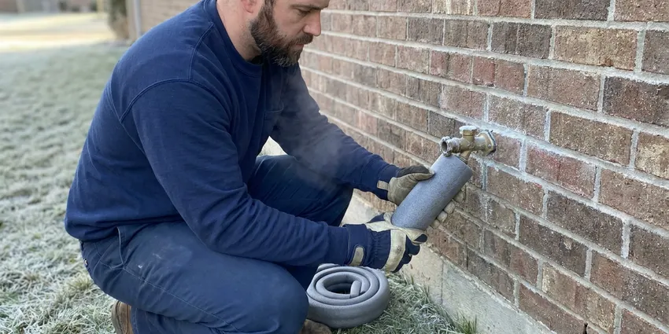

Commercial Plumbing in Frisco, TX
DFJ Plumbing provides top-tier commercial plumbing support throughout Frisco, TX. Our skilled technicians are ready to tackle any challenge, big or small.
- Fast Commercial Service
- Licensed & Insured
- Transparent Pricing
- Local Texas Experts
Need Expert Commercial Plumbing in Frisco, TX?
Don't let plumbing issues disrupt your operations. Get in touch with us for a swift resolution.
Your Go-To Commercial Plumbing Experts in Frisco, TX
DFJ Plumbing specializes in comprehensive commercial plumbing services tailored for businesses across Frisco, TX. We understand that commercial plumbing systems are complex and critical to your daily operations, requiring specialized tools and expertise beyond residential work.
Our expertise includes:
- Commercial drain cleaning and hydro-jetting
- Large-scale water heater repair and installation
- Backflow prevention device testing and repair

Additional Plumbing Maintenance Services in Frisco, TX
Our maintenance and specialty plumbing services in Frisco, TX protect your home year-round and extend the life of every system.


Customers
Why Choose DFJ Plumbing for Commercial Plumbing in Frisco, TX?
Choosing the right commercial plumber means selecting a partner who understands the unique challenges of business plumbing systems. Our team is equipped with advanced diagnostic tools and proven techniques to resolve even the most complex issues efficiently.
- 24/7 Availability, Commercial plumbing emergencies don't wait for business hours, so neither do we. Our team is on call to address critical issues anytime.
- Code Compliance, All our commercial plumbing work strictly adheres to local Frisco codes and Texas state regulations, ensuring safety and legality for your business.
- Advanced Equipment, We utilize commercial-grade tools like hydro-jetters and video inspection cameras to provide precise and lasting repairs for your plumbing systems.
Citywide Coverage
DFJ Plumbing proudly serves every commercial district and neighborhood of Frisco, ensuring that no business is left without expert plumbing support. Whether you operate a restaurant downtown or an office park on the outskirts, our team is readily available.
Experienced Team
The technicians at DFJ Plumbing bring years of hands-on experience to every commercial plumbing job. Their expertise covers everything from complex pipe networks to specialized commercial appliances, ensuring a high standard of work every time.
Safety-First Approach
For every commercial plumbing service, DFJ Plumbing emphasizes meticulous planning and execution to guarantee safety and compliance. We conduct thorough inspections and follow all necessary regulations to provide secure, long-lasting solutions for your business in Frisco.
Trusted Certified Frisco Plumbing Services Professionals
At DFJ Plumbing, we take pride in providing certified plumbing services throughout Frisco, TX. Backed by recognized industry credentials, our experienced plumbers combine technical skill with genuine customer care. Whether it is repair, installation, or maintenance, we follow strict safety and quality standards to deliver long-lasting results you can trust.
Call Us Now PHCC Plumbing Contractor Recognition
PHCC Plumbing Contractor Recognition Better Business Bureau (BBB) Accreditation
Better Business Bureau (BBB) Accreditation Angi Certified Pro
Angi Certified Pro ISO 9001 Quality Management Certification
ISO 9001 Quality Management CertificationReliable Commercial Plumbing Services in Frisco, TX
Commercial Drain Cleaning & Hydro-Jetting in Frisco
Commercial drains handle significantly higher volumes and different types of waste than residential ones, leading to more frequent and stubborn clogs. Our services include powerful hydro-jetting, which uses high-pressure water streams to scour pipe interiors, removing grease, sludge, and debris that accumulate in commercial kitchens and restrooms. This method is highly effective for maintaining the large diameter pipes typical in commercial settings and preventing costly backups in Frisco, TX. We service all types of commercial properties, from restaurants to retail spaces.

Commercial Water Heater Repair & Installation in Frisco, TX
Commercial water heaters are often larger, more complex, and operate under greater stress than residential units, commonly requiring specialized repair and maintenance. We service all major brands including A.O. Smith, Rheem, and Bradford White commercial models, ensuring your business has a consistent supply of hot water. Whether it's a gas, electric, or tankless system, our technicians are skilled in diagnosing issues like pilot light failures, heating element malfunctions, or pressure relief valve problems specific to high-demand commercial use in Frisco. Proper sizing and installation are crucial for efficiency and longevity.
Backflow Prevention Device Services in Frisco
Backflow prevention devices are critical for protecting the public water supply from contamination, a significant concern for commercial properties in Frisco. Texas regulations require annual testing and certification of these devices. Our certified plumbers provide comprehensive testing, repair, and installation of backflow preventers, ensuring your business remains compliant and safe. We handle all types, including reduced pressure zone (RPZ) assemblies and double check valve assemblies, which are common in commercial and industrial applications. Keeping these devices in good working order is a non-negotiable safety measure.
Commercial Pipe Repair & Repiping in Frisco, TX
Commercial properties in Frisco, especially older buildings, often face issues with aging plumbing infrastructure, including leaks, corrosion, and burst pipes. We provide expert pipe repair, using durable materials like copper, PEX, and various grades of PVC, suitable for commercial demands. For extensive damage or frequent problems, repiping might be necessary to upgrade your system and prevent future disruptions. Our team can assess your current piping, identify weak points, and recommend the most cost-effective and long-lasting solutions for your business.
Emergency Commercial Plumbing in Frisco
A plumbing emergency can halt business operations, leading to lost revenue and potential property damage. DFJ Plumbing offers rapid-response emergency commercial plumbing services throughout Frisco, TX. Whether it's a major burst pipe, a severe sewage backup, or a critical water heater failure, our team is equipped to handle urgent situations 24/7. We arrive quickly, assess the problem, and implement immediate solutions to mitigate damage and restore functionality, helping your business get back on track with minimal downtime.
Fixture and Faucet Repair & Replacement in Frisco, TX
High-traffic commercial restrooms and kitchens in Frisco often feature robust, heavy-duty fixtures and faucets designed for durability but still susceptible to wear and tear. We specialize in repairing and replacing commercial-grade fixtures, including sensor-operated faucets, industrial sinks, and commercial toilets. Our team ensures proper installation and recommends durable, water-efficient models that can withstand the demands of a commercial environment, helping to reduce water waste and maintenance costs over time. We work with brands like Sloan, Chicago Faucets, and T&S Brass.
Slab Leak Detection & Repair for Businesses in Frisco
Slab leaks can be particularly damaging for commercial buildings, especially those built on concrete slab foundations common in Texas. These leaks, often caused by shifting soil or corrosive water, can undermine foundations, lead to mold growth, and cause significant water waste. Our technicians use advanced acoustic and thermal imaging equipment to pinpoint slab leaks without invasive demolition. Once located, we provide efficient repair solutions, often involving re-routing or pipe repair, to protect your commercial property and prevent costly structural damage in Frisco.

Commercial Grease Trap Services in Frisco, TX
Restaurants and food service establishments in Frisco are legally required to maintain functional grease traps to prevent fats, oils, and greases (FOG) from entering the sewer system. DFJ Plumbing offers comprehensive grease trap cleaning, repair, and installation services. Regular cleaning is essential to prevent blockages and ensure compliance with local health codes. We also diagnose issues like foul odors, slow drainage, or trap overflow, ensuring your kitchen operations run smoothly and avoid costly fines and environmental hazards.
Expert Commercial Plumbing Near Me in Frisco, TX
When you search for "commercial plumbing near me" in Frisco, TX, you want a reliable, local company that understands the specific needs of Texas businesses. DFJ Plumbing is your community partner, offering prompt and professional service right in your neighborhood. Our localized expertise means we're familiar with the common commercial plumbing challenges posed by local water conditions and building codes.
We are dedicated to providing fast and efficient commercial plumbing solutions across Frisco, TX. Our technicians are strategically dispatched to ensure quick response times, minimizing disruptions to your business. Trust DFJ Plumbing to be your accessible, go-to commercial plumbing expert, ready to serve your property with skill and precision.
DFJ Plumbing at a Glance
- Licensed and insured plumbers serving Frisco, TX
- 24/7 emergency service with same-day scheduling
- Clear written estimates, no hidden fees
- 4.9-star rated by 812+ Texas customers
Frisco Map
Frisco Information
- Population
- 225,007
- Area codes
- 469/972/214
- Service area
- Frisco and communities within 40 miles
- Nearby
- Little Elm, Plano, Allen, McKinney
For businesses in Frisco, TX, the expansive Texas climate can put unique stress on commercial plumbing, from heat-related pipe expansion to foundation shifts impacting underground lines, necessitating robust and expertly maintained systems.
Expert Services
Trust our professionals for reliable DFJ Plumbing solutions in Frisco, TX.
Our Specialized Plumbing Services in Frisco, TX
At DFJ Plumbing, we provide a complete range of plumbing services across Frisco, TX. From leak detection to full system installations, our team ensures fast, precise, and affordable service for both residential and commercial properties. Explore our core services below:


How Our Commercial Plumbing Process Works in Frisco, TX
Our commercial plumbing process is designed for efficiency and minimal disruption, ensuring your business in Frisco receives prompt, expert attention.
Request a Quote
Call (737) 405-5978 or fill out our online form to describe your commercial plumbing needs. We will gather initial information to understand the scope of work.
On-Site Assessment
A certified commercial plumber will visit your Frisco business to conduct a thorough inspection. We use advanced diagnostic tools to accurately identify the issue.
Transparent Proposal
Based on our assessment, we provide a detailed, upfront estimate for the required services. You'll understand all costs before any work begins.
Frequently Asked Questions About Commercial Plumbing in Frisco
Commercial plumbing costs in Frisco vary widely depending on the type and complexity of the service. A minor drain clog might range from $150-$400, while a commercial water heater installation could be $2,000-$10,000 or more. Repiping an entire commercial building can run into tens of thousands. We provide transparent, upfront estimates after a thorough assessment.
Yes, many commercial plumbing projects in Frisco, especially installations, major repairs, or system upgrades, require permits from the local building department. This ensures the work meets safety and code standards. DFJ Plumbing handles all necessary permitting processes to ensure your commercial plumbing work is fully compliant with local regulations.
DFJ Plumbing services and installs all major brands of commercial water heaters, including A.O. Smith, Rheem, Bradford White, Ruud, and State. Our technicians are trained to work on various types, such as gas, electric, and tankless commercial units, ensuring your business has reliable hot water.
Commercial plumbing systems are typically larger, more complex, and subject to stricter codes than residential ones. They handle higher volumes of waste and water, often require specialized equipment like grease traps and backflow preventers, and use more durable, industrial-grade materials. The scale and regulatory requirements are significantly greater for commercial properties.
Yes, DFJ Plumbing understands that plumbing emergencies can happen anytime and severely impact your business operations. We offer 24/7 emergency commercial plumbing services throughout Frisco, TX. You can call us anytime, day or night, and we will dispatch a technician to address your urgent plumbing issue promptly.
Look for signs like consistently slow drains, foul odors coming from drains or grease traps, reduced water pressure, discolored water, unexplained increases in water bills, or damp spots on walls or floors. Any of these can indicate a developing plumbing problem that needs professional attention before it escalates.
DFJ Plumbing stands behind the quality of our commercial plumbing work. We offer a comprehensive warranty on both parts and labor for all services performed. The specific terms of the warranty will be clearly outlined in your service agreement, providing peace of mind for your investment.
The frequency of commercial drain cleaning in Frisco depends heavily on the type of business. Restaurants, for example, may need quarterly or even monthly hydro-jetting due to grease accumulation. Office buildings might only require annual cleaning. Proactive maintenance prevents costly emergencies and keeps your business running smoothly.
What People Are Saying About Our Plumbing Experts?

Patricia H.
We had a slab leak that two other companies could not find. DFJ Plumbing located it in under an hour, explained our options, and the price matched the quote to the dollar.
Slab Leak Repair · Plano, TX
Emily R.
I called DFJ Plumbing for plumbing repair, and the technician was fast, polite, and thorough. They explained the problem clearly and fixed it the same day. I will definitely hire them again. Highly recommended!
Plumbing Repair · Frisco, TX
Robert G.
The trenchless sewer replacement saved our front yard. They walked us through the camera inspection footage first so we knew exactly what we were paying for.
Sewer Line Replacement · Carrollton, TX
Sofia M.
Two new toilets installed in one visit, no mess left behind, and the tech even adjusted a faucet he noticed was dripping. Fair pricing and really friendly.
Toilet Installation · Little Elm, TXJames P.
Our commercial plumbing system had a leak under the sink, and DFJ Plumbing handled it professionally. The plumbers arrived quickly and restored everything without disruption to our customers.
Commercial Plumbing · McKinney, TXLaura S.
I scheduled a water heater replacement, and the team made the process smooth and affordable. The new unit works perfectly, and they cleaned up after completing the job.
Water Heater Replacement · Little Elm, TX